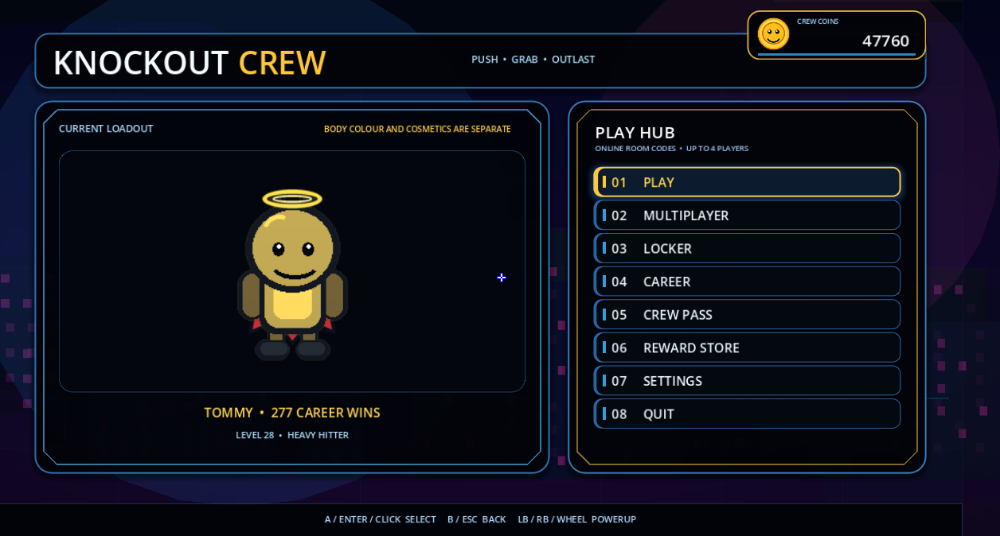
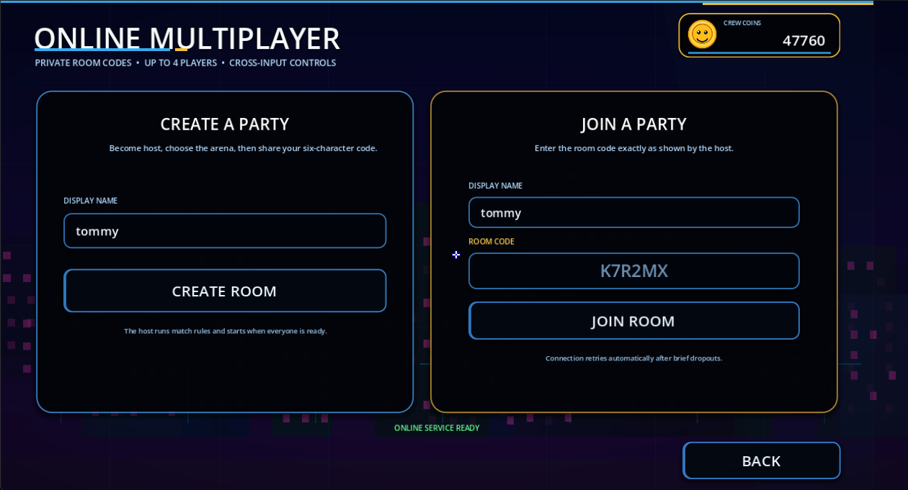
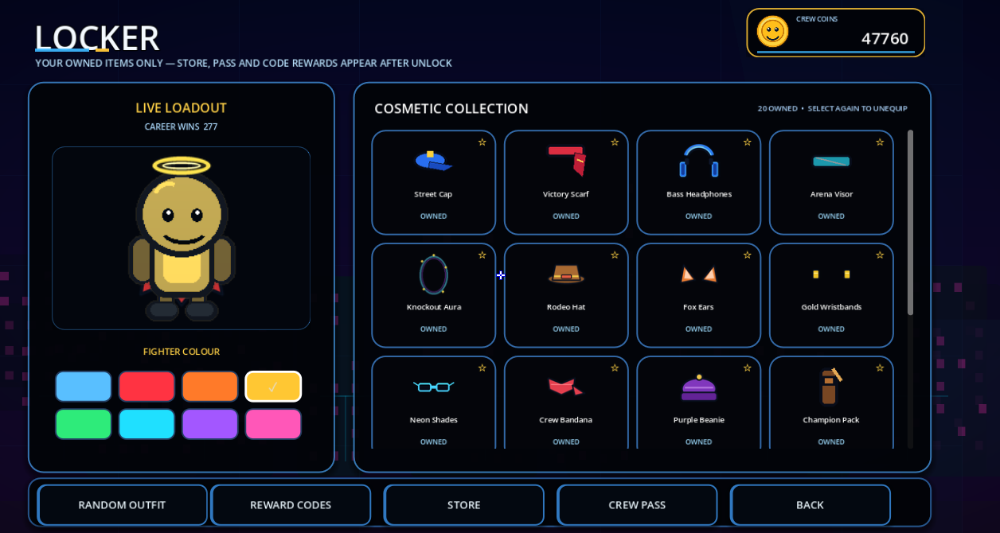
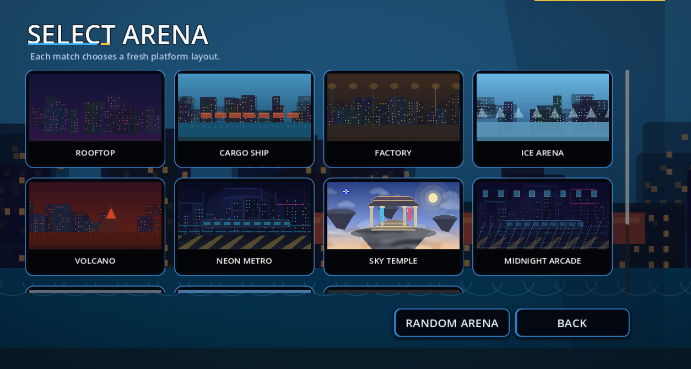
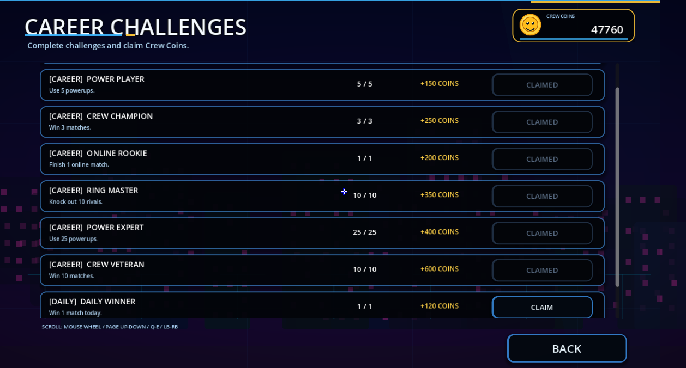
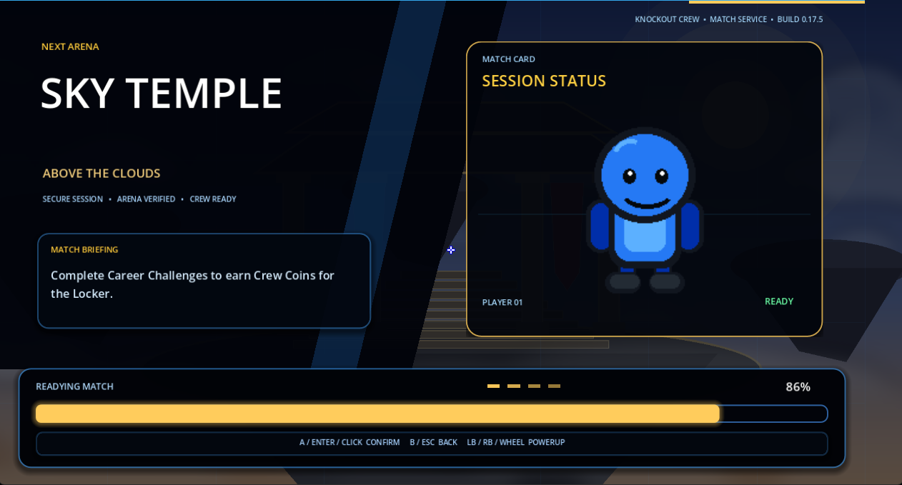

A behind-the-scenes record of how Knockout Crew grew from a small platform-fighting prototype into a feature-complete multiplayer project.

Building a cleaner final menu
The latest interface pass brought the Play Hub, current loadout and Crew Coin balance into one controller-friendly layout. The goal was clarity: every major destination can be reached without hunting through nested screens.
Read the full entry
We standardised panel borders, focus states, TV-safe margins and footer prompts. The same visual language now carries into Multiplayer, Locker, Career, Store and Settings. The interface is still lightweight enough for low-end machines and Xbox One targets.

Making room-code multiplayer reliable
The online flow now supports private six-character rooms, ready states, reconnect attempts, host controls and unanimous rematch voting.
Read the full entry
We also resolved overlapping spawn slots by assigning deterministic roster positions, moved character movement into the fixed physics loop and added a short spawn-grace period. Two-player matches end when an opponent leaves; larger parties continue with the remaining fighters.

Separating fighter colour from cosmetics
One of the most important Locker fixes was moving cosmetics into their own render layer so body colours no longer recolour hats, headphones, wings or accessories.
Read the full entry
Cosmetics now follow animation frames through category-specific anchor points. Unlock rules also keep Store, Crew Pass and reward-code items exclusive to their proper sources until earned.

Growing the arena roster
Knockout Crew expanded from its original set to eleven selectable arenas, including Neon Metro, Sky Temple, Midnight Arcade, Sunset Docks, Crystal Cavern and Training Hub.
Read the full entry
Each map reuses a small set of tested gameplay layouts and lightweight background assets. That keeps collision predictable and memory use conservative while still giving every location a distinct identity.

Progression beyond a single match
Career milestones, rotating daily and weekly quests, Crew Coins, reward codes and the Crew Pass give each session a longer-term purpose.
Read the full entry
Quest rotations use calendar-day and calendar-week keys, while reward sources remain clearly separated. That means code-exclusive cosmetics never appear in the Store or Crew Pass, and Pass cosmetics remain tied to their reward track.

Turning loading into part of the presentation
Loading screens were rebuilt as match briefings, with arena identity, progress stages, tips, fighter status and music that carries into the match.
Read the full entry
The screens use calm motion and simple layered artwork instead of expensive effects. Reduced-motion settings and low-spec profiles keep them responsive across a wide range of hardware.
VIDEO DEVLOGS
More production diaries are coming.
Future video diaries, patch walkthroughs and release updates will be linked here and on the itch.io project page.